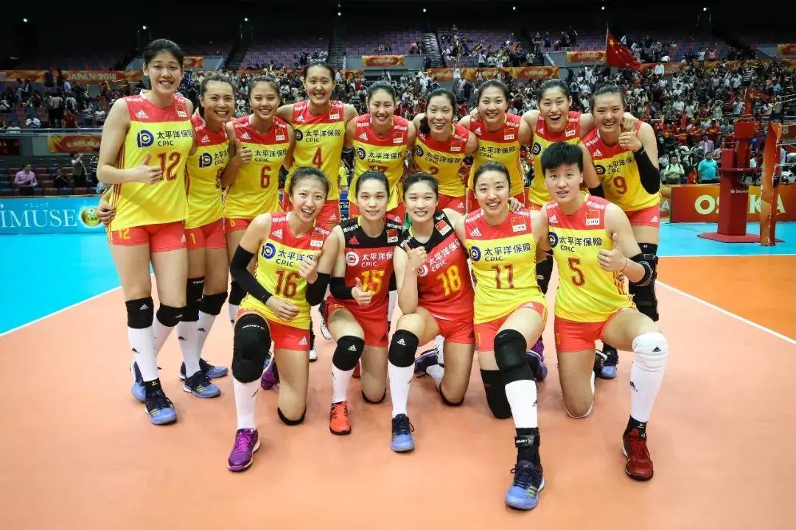

 国内排球 中国国家女子排球队（简称中国女排）隶属于中国排球协会，是中国各体育团队中成绩突出的体育团队之一。 硬件要求 排球比赛场地为18米×9米的长方形 ，四周至少有2米空地，场地上空至少高7米内不得有障碍物。场中间横划一条线把球场分为相等的两个场区。所有线宽均为5厘米。 比赛规则 球员通常不需要掌握全部六种技术发球、一传（接发球）、二传（举球、托球）、扣球、拦网、救球，而是通常根据球队的战术，以其中的一种或多种为专长。 组织机构 国际排球联合会，简称国际排联（FIVB），1947年，在法国、比利时等14个国家的排球协会进行聚会，创建了国际排球联合会，总部设在巴黎，法国人鲍尔・黎伯担任第一任主席，至1985年年迈退休，黎伯被推选为国际排联终身名誉主席。